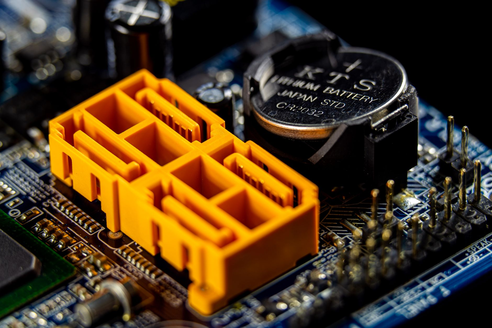

한국, 워싱턴 'Pax Silica' 정상회담 참여…AI 공급망 동맹 실리 따져보니

The Korea Herald 보도에 따르면, 한국 정부 대표단이 워싱턴 DC에서 개최된 'Pax Silica(팍스 실리카)' 정상회담에 공식 참여해 AI 공급망 협력 의제를 논의했다. 이 포럼은 미국·일본·네덜란드·대만·한국 등 반도체 핵심 국가들이 모여 중국 의존 탈피와 공급망 리질리언스를 논의하는 플랫폼이다.
한국이 이 협의체에서 내세울 수 있는 카드는 명확하다. HBM 세계 시장 점유율 1위(SK하이닉스 약 53%), DRAM 세계 시장 점유율 약 70%(삼성+SK), 그리고 고려아연의 전략광물 회수 능력이 협상 자산이다. 반면 한국이 필요로 하는 것은 EUV 장비(ASML), 첨단 포토레지스트(신에쓰·JSR), 불화아르곤 가스 등 공정 소재의 안정적 접근권이다.
Korea Economic Institute of America 보고서는 한국의 공급망 리질리언스 강화 전략으로 ①원자재 수입선 다변화, ②핵심 소재 비축 확대, ③동맹국과의 기술 공유 협정을 제시했다. 현재 한국의 핵심 소재 비축량은 정부 권고 기준(60일분) 대비 실제 비축은 30~45일분 수준으로 알려져 있다.
서울대 국가미래전략원이 주최한 '미·중 기술패권 경쟁과 대한민국의 전략' 포럼에서는 한국이 기술 동맹(미국 주도)과 경제 의존(중국 시장)의 이중 구조에서 '전략적 모호성'을 유지하기 어렵다는 분석이 제기됐다. 중국 수출 비중이 반도체 전체 수출의 약 40%에 달하는 구조에서 완전한 미국 진영 편입은 단기 손실이 불가피하다.
Pax Silica 참여는 한국이 공급망 동맹의 '공급자' 포지션을 공식화하는 상징적 사건이다. 그러나 포럼 참여가 실질적 이익으로 이어지려면 반도체 소재·장비의 호혜적 접근권 확보라는 구체적 조건이 협상 테이블에 올라야 한다. 네덜란드가 ASML EUV 장비 수출 통제를 완화하거나, 일본이 포토레지스트 수출 절차를 간소화하는 형태의 반대급부가 없으면 한국은 의무만 지고 권리는 불분명한 비대칭 구조에 놓인다.
동남아시아의 사례는 반면교사가 된다. Lowy Institute 분석에 따르면, 동남아 국가들은 미중 양측으로부터 공급망 참여 압박을 동시에 받으며 '전략적 헤징'이 점점 불가능해지는 상황에 몰리고 있다. 한국도 중국 시장 의존도(수출 비중 약 40%)와 미국 기술 동맹 의무 사이에서 유사한 딜레마를 겪고 있으며, 이를 소재 공급망 다변화로 해소하지 못하면 선택지가 좁아진다.
Pax Silica 참여를 통해 미국·일본·네덜란드로부터 첨단 반도체 장비·소재 접근성을 실질적으로 개선하는 성과를 낸다면, 삼성전자·SK하이닉스의 2nm 이하 선단 공정 전환 속도가 빨라진다. 이 경우 TSMC 대비 기술 격차 축소가 예상보다 빠르게 진행될 수 있다.
전략광물 공급자로서 고려아연, 그리고 향후 국내 희토류·화합물 반도체 소재 생산 기업들은 이 동맹 구조에서 '동맹 내 유일 공급자' 프리미엄을 누릴 수 있다. 비중국 갈륨·게르마늄 공급원으로서의 한국 가치가 외교적 자산으로 전환될 수 있다.
중국 반도체 시장 의존도가 높은 한국 메모리 업체들은 미국 주도 동맹 편입이 명시화될수록 중국 시장에서의 점유율을 잃을 리스크가 커진다. 실제로 중국은 2024년 미국산·한국산 메모리 반도체에 대한 반독점 조사를 예고했으며, 이는 직접적인 수출 리스크로 연결될 수 있다.
전략적 모호성을 포기하지 않으면서 Pax Silica에 참여하는 '중간 노선'은 미국과 중국 양측 모두에서 신뢰를 잃는 최악의 시나리오로 이어질 수 있다. 외교적 포지셔닝과 산업 전략이 정합성을 갖추지 못하면, 결국 한국 기업들만 불확실성의 비용을 부담하게 된다.
정부 협상 대표단은 Pax Silica 회의에서 '우리가 무엇을 줄 수 있는가(HBM, 전략광물 회수 능력)'와 '우리가 무엇을 받아야 하는가(EUV 접근, 포토레지스트 공급 안정화, 대중 수출 유예 조건)' 양쪽을 동시에 명문화하는 협상 전략이 필요하다.
기업 구매 담당자는 Pax Silica 협의 결과에 따른 수출 통제 변경 사항을 모니터링하고, 특히 ASML EUV 장비 추가 발주 가능 여부 변화를 주시해야 한다. 2025년 내 EUV 추가 도입이 가능하다면 선단 공정 전환 일정을 6~12개월 앞당길 수 있다.
실제 조달 현장에서는 — 외교 포럼이 열리면 소재·장비 수입 통관 속도가 일시적으로 느려지는 경우가 있다. 각국이 수출 허가 검토를 강화하기 때문이다. Pax Silica 이후 네덜란드·일본발 반도체 소재 통관 리드타임을 평소 대비 2~3주 여유 있게 잡아두는 것이 현장 조달 관리의 실용적 대응이다.
이 포스팅은 쿠팡 파트너스 활동의 일환으로 수수료를 제공받습니다.